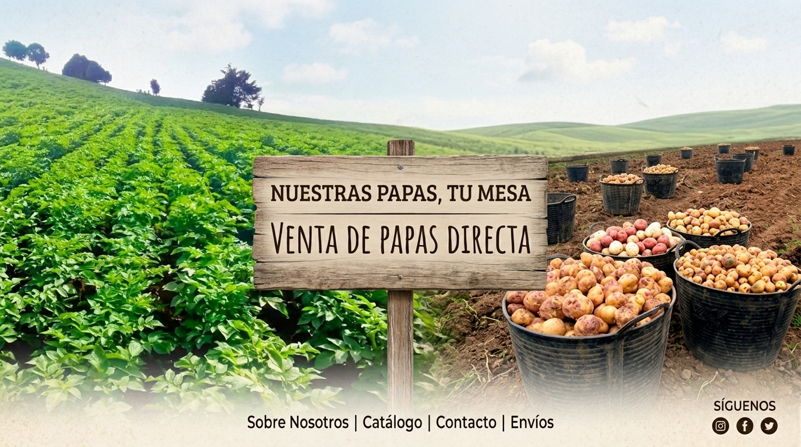

Productos Destacados
- Papaya Premium :

- Papaya Orgánica :

- Papaya en Rodajas :


Descubre la deliciosa papa de la más alta calidad.
En La Rica Papa nos dedicamos a ofrecer papas frescas y jugosas, cultivadas con amor y cuidado para garantizar la mejor experiencia de sabor.